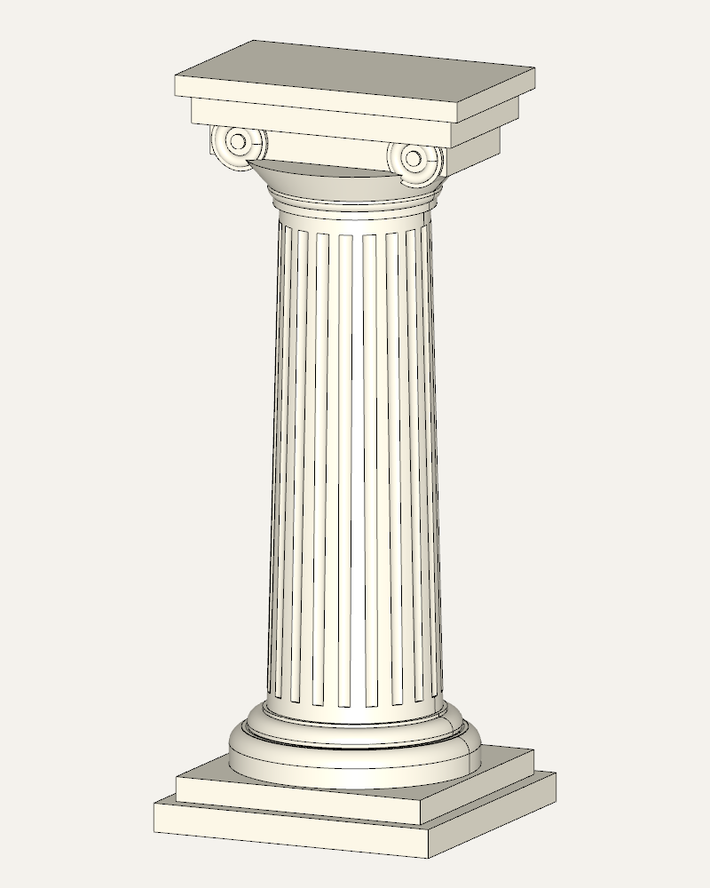

Работа с агентом
Обновление модели zencad до второй версии продиктовано желанием облегчить работу с системой ИИ-агенту.
Изменения в api в основном касаются архиважного для агентского программирования принципа наименьшего удивления. В частности, для этого к более привычному, стандартному виду приведена система типов. Ленификация получила более системный контракт.
Для удобства агента реализованы инструменты inspect, check, render Автоматизация, позволяющие производить цикл моделирования и отладки не покидая консоли.
Один проверяемый цикл
Сохраним в model.py пластину с отверстием:
from zencad import *
plate = box(20, 10, 4)
hole = cylinder(2, 4).translate(10, 5, 0)
body = (plate - hole).solids().only()
display(body, name="plate")
show()
Агент может запросить отчёт и проверить конкретные требования:
zencad inspect model.py --json
zencad check model.py --valid --solid --volume 749:751 --bbox-size 19.99:20.01,9.99:10.01,3.99:4.01 --json
zencad inspect model.py --tree --no-cache
Объём этой модели составляет примерно 749.735, габариты — 20 × 10 × 4. Проверка должна завершиться с кодом 0. Если увеличить радиус отверстия до 3, скрипт всё ещё строит валидное тело, но проверка объёма завершается с кодом 7: модель перестала удовлетворять заданному требованию. Так агент получает обратную связь для следующей правки.
Для визуальной проверки можно подготовить несколько видов:
zencad render model.py -o views.png --views iso,front,top --size 640x480
Диагностика и повторные итерации
Если построение падает, zencad inspect model.py --tree --failed-path помогает сузить поиск причины. Для отладки можно выбрать немедленное вычисление и отключить дисковый кэш; при повторной работе кэш позволяет использовать сохранённые результаты. Эти настройки независимы — см. «Вычисления и кэш».
Геометрические селекторы позволяют описать смысл выбора, например направление ребра или положение грани, вместо предположения об их порядке. Проверка геометрии возвращает структурированные сведения об ошибках.
Параметры команд, форматы отчётов и ограничения исполнения собраны в разделе «Автоматизация: inspect, check, render».
Агент может кодить 3D?
Таки да, вот, например:
antique_column.py:
#!/usr/bin/env python3
"""A small Ionic-inspired column modelled entirely with ZenCad."""
import math
from zencad import *
def fluted_shaft(
bottom_radius=21,
top_radius=18,
height=122,
flute_count=20,
flute_radius=2.25,
):
"""Make a gently tapered shaft with shallow, tapered flutes."""
shaft = cone(r1=bottom_radius, r2=top_radius, h=height)
# The cutters follow the taper of the shaft. Leaving a small uncut band at
# either end makes the transition into the base and capital more legible.
cutters = []
margin = 4
depth = 0.65
for index in range(flute_count):
angle = 2 * math.pi * index / flute_count
c, s = math.cos(angle), math.sin(angle)
lower_distance = bottom_radius + flute_radius - depth
upper_distance = top_radius + flute_radius - depth
lower = circle(r=flute_radius, wire=True).translate(
lower_distance * c,
lower_distance * s,
margin,
)
upper = circle(r=flute_radius, wire=True).translate(
upper_distance * c,
upper_distance * s,
height - margin,
)
cutters.append(loft([lower, upper]))
return shaft - union(cutters)
def ionic_capital(z):
"""Build an abstracted Ionic capital with four visible scroll ends."""
parts = [
cylinder(r=19.5, h=4).up(z),
torus(r1=18.6, r2=2.2).up(z + 4),
cone(r1=20, r2=27, h=8).up(z + 4),
box(62, 30, 8, center="xy").up(z + 12),
]
# Two horizontal rolls form the body of the volutes. Rings placed on both
# faces give the scrolls a readable stepped profile in the CAD viewer.
roll_z = z + 16
for x in (-23, 23):
parts.append(
cylinder(r=7.2, h=32, center=True)
.rotateX(deg(90))
.translate(x, 0, roll_z)
)
for y in (-16.1, 16.1):
parts.extend(
[
torus(r1=4.8, r2=1.35)
.rotateX(deg(90))
.translate(x, y, roll_z),
cylinder(r=1.8, h=1.2, center=True)
.rotateX(deg(90))
.translate(x, y, roll_z),
]
)
parts.extend(
[
box(68, 38, 7, center="xy").up(z + 20),
box(74, 44, 5, center="xy").up(z + 27),
]
)
return union(parts)
def antique_column():
"""Return the complete 181 mm high column as a single ZenCad shape."""
base_parts = [
box(72, 72, 7, center="xy"),
box(64, 64, 6, center="xy").up(7),
cylinder(r=30, h=5).up(13),
torus(r1=26, r2=4).up(18),
cylinder(r=27, h=4).up(18),
torus(r1=22.5, r2=3.2).up(23),
cylinder(r=22, h=4).up(23),
]
shaft_z = 27
shaft_height = 122
shaft = fluted_shaft(height=shaft_height).up(shaft_z)
capital_z = shaft_z + shaft_height
return union(base_parts + [shaft, ionic_capital(capital_z)])
if __name__ == "__main__":
marble = Color(0.86, 0.82, 0.70)
display(antique_column(), color=marble)
show()

Команда для этого ракурса:
zencad render antique_column.py -o antique-column.png \
--yaw -65 --pitch 12 --msaa 8 --size 800x1000 \
--background "#f4f2ed" --timeout 120